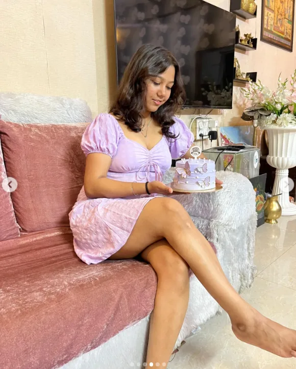

Choose a sequence with a beginning and end
A simple sequence could be a portrait, outfit detail, cake, decorations, a group photo, and one candid moment. Put the most compelling image first, then make each later slide add a new detail rather than repeat the cover.
A carousel can be shorter than the maximum allowed by the app. Use only images that help tell the story and that you have permission to share.
Write a caption that adds context
Mention the setting or a small detail people would not understand from the photo alone. Avoid repeating every visual detail in the caption. If you want replies, add one genuine question about celebrations or favorite birthday moments.
Write clear alt text where Instagram offers the option. Describe the image plainly, including the main subject and relevant setting; do not stuff it with hashtags.
Review before you publish
Check the order, crops, tags, location, and audience. Preview the first image in the profile grid if that option is available. Confirm that identifiable guests are comfortable with the post and tagging.
Save a draft if you need more time. For current carousel limits and editing options, rely on Instagram’s in-app controls or official creator guidance.
Quick checklist
- Choose a cover image that represents the celebration
- Order portrait, details, cake, and moments intentionally
- Add context rather than narrating every slide
- Review tags, location, crop, and consent
- Check current Instagram settings before posting
Frequently asked questions
How many photos should a birthday carousel include?
Use as many as help the story, not the full maximum by default. A concise set of distinct moments is easier to follow.
What should the first carousel image be?
Choose a clear, inviting photo that represents the celebration and still reads well as a small preview.
Further reading
These resources support the practical suggestions above. Check current platform settings before publishing.
- How to Make the Most of Instagram Carousels — Explains creating multi-image posts and planning a coherent carousel.
- What Is an Instagram Carousel? Tips and Ideas — Carousel format guidance and content ideas.
- Instagram Carousel: Slide Limit, Size, How to Make One — Step-by-step creation details; check the current Instagram interface before publishing.
- Introducing Best Practices, an Education Hub for Creators on Instagram — Instagram’s in-app advice covers creation, engagement, reach and guidelines.
- Schedule & Publish Instagram Multi-Photo (Carousel) Posts — Explains the available workflow and options for scheduling carousel posts.
- How to Create an Instagram Carousel — Shopify — Step-by-step carousel creation with design ideas.
- How to Add Multiple Photos to an Instagram Post — MakeUseOf — Walks through adding and ordering several photos in one post.
- Instagram Carousel: Why Use Them and Ideas — Buffer — Carousel ideas and what tends to earn engagement.
- 8 Ways to Make Instagram Carousel Posts Your Audience Loves — Later — Tips on slide design, hooks and swipe prompts.
See the real moment on Instagram
This guide is inspired by Shanaya's 22nd birthday post. Follow @_itzzzshanaya for more lifestyle, fashion and dance moments, and to see what the next guide is about.

Open the birthday post on Instagram ↗Follow @_itzzzshanaya ↗ Open the birthday post ↗